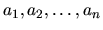

| Ratio |
If you ever see a televised report on stock market activity, you'll hear the anchorperson say something like ``Gainers outnumbered losers 14 to 9,'' which means that for every 14 stocks that increased in value that day, approximately 9 other stocks declined in value. Often, as you hear that, you'll see on the screen something like this:
Gainers 1498 Losers 902
As a person with a head for numbers, you'll notice that the anchorperson could have said ``Gainers outnumbered losers 5 to 3'', which is a more accurate approximation to what really happened. After all, the exact ratio of winners to losers is (to the nearest millionth) 1.660754, and he reported a ratio of 14 to 9, which is 1.555555, for an error of 0.105199; he could have said ``5 to 3'', and introduced an error of only 1.666667-1.660754=0.005913. The estimate ``5 to 3'' is not as accurate as ``1498 to 902'' of course; evidently, another goal is to use small integers to express the ratio. So, why did the anchorperson say ``14 to 9?'' Because his algorithm is to lop off the last two digits of each number and use those as the approximate ratio.
What the anchorman needs is a list of rational approximations of increasing accuracy, so that he can
pick one to read on the air. Specifically, he needs a sequence {
} where a1 is a
rational number with denominator 1 that most exactly matches the true ratio of winners to losers
(rounding up in case of ties), ai+1 is the rational number with least denominator that provides a
more accurate approximation than ai, and an is the exact ratio, expressed with the least possible
denominator. Given this sequence, the anchorperson can decide which ratio gives the best tradeoff
between accuracy and simplicity.
For example, if 5 stocks rose in price and 4 fell, the best approximation with denominator 1 is 1/1;
that is, for every stock that fell, about one rose. This answer differs from the exact answer by 0.25
(1.0 vs 1.25). The best approximations with two in the denominator are 2/2 and 3/2, but neither is
an improvement on the ratio 1/1, so neither would be considered. The best approximation with
three in the denominator 4/3, is more accurate than any seen so far, so it is one that should be
reported. Finally, of course, 5/4 is exactly the ratio, and so it is the last number reported in the
sequence.
Can you automate this process and help the anchorpeople?
The approximations for a pair are printed one to a line, beginning in column one, with the numerator and denominator of an approximation separated by a slash (``/''). A blank line separates one sequence of approximations from another.
5 4 1498 902
1/1 4/3 5/4 2/1 3/2 5/3 48/29 53/32 58/35 63/38 68/41 73/44 78/47 83/50 88/53 93/56 377/227 470/283 563/339 656/395 749/451